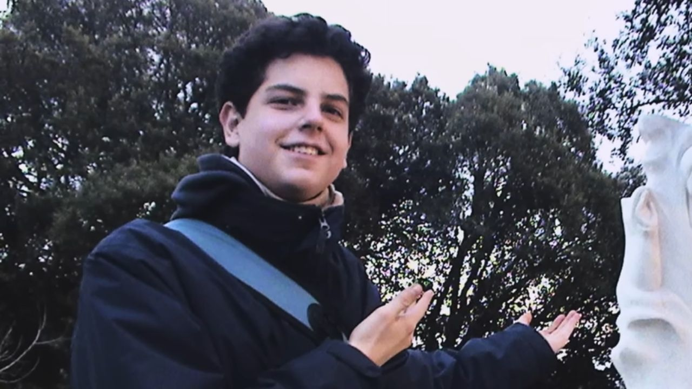

Carlo Acutis foi um jovem italiano conhecido por sua fé profunda e pelo jeito moderno de evangelizar usando a internet. Ele nasceu em 1991, em Londres, mas cresceu em Milão, na Itália, e desde pequeno já demonstrava muito amor por Deus, especialmente pela Eucaristia, que ele chamava de “sua autoestrada para o céu”. Mesmo sendo adolescente, Carlo era muito ligado à tecnologia, gostava de programar e criou um site onde reuniu informações sobre milagres eucarísticos ao redor do mundo, unindo sua paixão pela informática com sua fé e ajudando muitas pessoas a conhecerem mais sobre a Igreja. Ele também era conhecido por sua bondade, ajudava os pobres, defendia colegas que sofriam bullying e buscava viver de forma simples, acreditando que todos nascem originais, mas muitos morrem como cópias, incentivando as pessoas a serem autênticas no bem. Aos 15 anos, Carlo foi diagnosticado com leucemia, e mesmo doente ofereceu seu sofrimento a Deus, mantendo sua fé até o fim, falecendo em 2006. Em 2020, foi beatificado pela Igreja Católica, tornando-se um exemplo para os jovens de hoje e mostrando que é possível ser santo mesmo no mundo moderno, usando coisas do dia a dia, como a internet, para fazer o bem.
